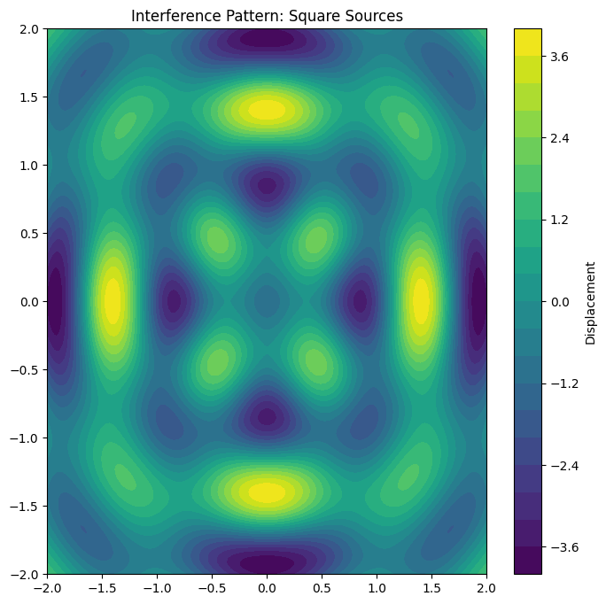
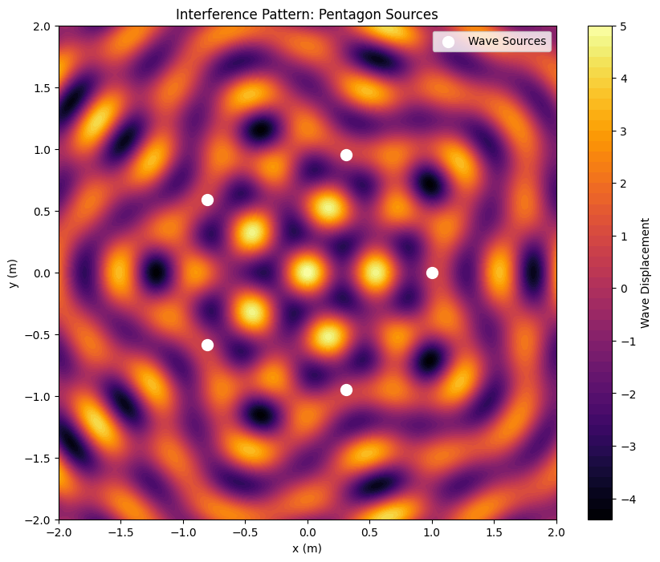

Interference Patterns on a Water Surface: A Deep Dive into Wave Superposition
When waves ripple across a water surface, they do not travel in isolation—they interact. These interactions, known as interference, create mesmerizing patterns that reveal fundamental wave behavior. Whether it’s the gentle overlap of ripples from raindrops or the complex interplay of waves from multiple sources, interference patterns offer a window into the physics of superposition.
This article explores how waves from point sources arranged at the vertices of regular polygons combine to form intricate patterns on a water surface. Through detailed examples, mathematical analysis, and visualizations, we will uncover the beauty and science behind these phenomena.
Motivation: Why Study Water Surface Interference?
Interference occurs when waves from different sources overlap, blending their amplitudes to create regions of constructive interference (amplification) or destructive interference (cancellation). On a water surface, this phenomenon is visually striking: ripples from two or more sources can form peaks taller than any single wave or troughs that completely flatten the surface.
Studying these patterns sharpens our understanding of wave mechanics and connects to real-world applications—such as sonar systems, acoustics, and wave-based technologies. By placing wave sources at the vertices of a regular polygon, we can systematically explore how geometry influences interference, making this a hands-on and engaging way to grasp wave physics.
Theoretical Background: Wave Equation and Superposition
The Single Disturbance Equation for a Circular Wave
Each wave disturbance propagating from a source follows the equation:
where:
- \(y(x, y, t)\) is the water surface displacement at position \((x, y)\) and time \(t\).
- \(A\) is the wave amplitude.
- \(k = \frac{2\pi}{\lambda}\) is the wave number, where \(\lambda\) is the wavelength.
- \(r = \sqrt{(x - x_s)^2 + (y - y_s)^2}\) is the distance from the source at \((x_s, y_s)\).
- \(\omega = 2\pi f\) is the angular frequency, where \(f\) is the wave frequency.
- \(\phi\) is the initial phase.
If multiple wave sources exist, their effects sum together due to superposition:
where \(n\) is the number of sources (polygon vertices).
Now, let’s explore three examples: equilateral triangle, square, and regular pentagon.
Example 1: Equilateral Triangle (3 Sources)
Step 1: Positioning the Sources
Consider three wave sources placed at the vertices of an equilateral triangle centered at the origin \((0,0)\), with side length \(s = 1\) meter. The vertex coordinates are:
- Source 1: \((0, \frac{\sqrt{3}}{2})\)
- Source 2: \((-\frac{1}{2}, -\frac{\sqrt{3}}{6})\)
- Source 3: \((\frac{1}{2}, -\frac{\sqrt{3}}{6})\)
Step 2: Wave Equations
The distance of a point \((x, y)\) from each source is:
The resulting wave from each source is:
$$
y_i(x, y, t) = A \cos(k r_i - \omega t)
$$
Step 3: Superposition
Step 4: Analyzing Patterns
- Constructive Interference occurs at points where \(k r_1 \approx k r_2 \approx k r_3\), such as the center \((0,0)\), amplifying the wave to a maximum of \(3A\).
- Destructive Interference happens where phase differences cause cancellation, forming symmetrical dark bands.
- Symmetry: The threefold symmetry of the triangle creates a star-like pattern radiating from the center.
Example 2: Square (4 Sources)
Step 1: Positioning the Sources
For a square of side length \(s = 1\) meter, the vertices are:
- Source 1: \((0.5, 0.5)\)
- Source 2: \((0.5, -0.5)\)
- Source 3: \((-0.5, -0.5)\)
- Source 4: \((-0.5, 0.5)\)
Step 2: Wave Equations
Each wave follows:
$$
y_i = A \cos(k r_i - \omega t)
$$
where \(r_i\) is calculated for each vertex.
Step 3: Superposition
Step 4: Analyzing Patterns
- Constructive Interference at the center \((0,0)\), with a maximum amplitude of \(4A\).
- Destructive Interference along diagonals or at midpoints between sources.
- Symmetry: The square’s fourfold symmetry results in a grid-like interference pattern.
Example 3: Regular Pentagon (5 Sources)
Step 1: Positioning the Sources
For a pentagon with radius \(R = 1\) meter, the vertices are:
$$
(x, y) = (\cos \theta_i, \sin \theta_i), \quad \theta_i = \frac{2\pi i}{5}, \quad i = 0, 1, 2, 3, 4
$$
Step 3: Superposition
Step 4: Analyzing Patterns
- Constructive Interference at the center with a maximum of \(5A\).
- Destructive Interference forms a pentagonal star-like pattern.
- Symmetry: The fivefold symmetry results in an intricate, flower-like pattern.
Bringing It to Life: Python Simulation
To visualize these patterns, we can simulate them using Python:
import numpy as np
import matplotlib.pyplot as plt
# Generate a 2D grid
x = np.linspace(-2, 2, 200)
y = np.linspace(-2, 2, 200)
X, Y = np.meshgrid(x, y)
# Define wave sources (square)
sources = [(0.5, 0.5), (0.5, -0.5), (-0.5, -0.5), (-0.5, 0.5)]
# Compute interference pattern
Z = sum(np.cos(2 * np.pi * np.sqrt((X - sx)**2 + (Y - sy)**2)) for sx, sy in sources)
# Plot the pattern
plt.figure(figsize=(8, 8))
plt.contourf(X, Y, Z, levels=20, cmap='viridis')
plt.colorbar(label='Displacement')
plt.title('Interference Pattern: Square Sources')
plt.show()

Here’s an additional Python example that visualizes the interference pattern for a pentagon-shaped wave source arrangement.
This script simulates the superposition of waves originating from the five vertices of a regular pentagon and generates a heatmap of the interference pattern.
Python Code: Interference from a Pentagon of Wave Sources
import numpy as np
import matplotlib.pyplot as plt
# Parameters
A = 1.0 # Amplitude
k = 2 * np.pi / 0.5 # Wave number (assuming wavelength λ = 0.5m)
omega = 2 * np.pi * 1.0 # Angular frequency (assuming f = 1Hz)
t = 0 # Time snapshot
# Create a 2D grid of points
x = np.linspace(-2, 2, 300)
y = np.linspace(-2, 2, 300)
X, Y = np.meshgrid(x, y)
# Define the pentagon vertices (assuming radius R = 1)
n_sources = 5
theta = np.linspace(0, 2 * np.pi, n_sources, endpoint=False)
sources = [(np.cos(t), np.sin(t)) for t in theta] # Pentagon vertices
# Compute the total wave displacement at each point
Z = np.zeros_like(X)
for sx, sy in sources:
r = np.sqrt((X - sx)**2 + (Y - sy)**2) # Distance from each source
Z += A * np.cos(k * r - omega * t) # Wave superposition
# Plot the interference pattern
plt.figure(figsize=(10, 8))
plt.contourf(X, Y, Z, levels=50, cmap='inferno')
plt.colorbar(label="Wave Displacement")
plt.scatter(*zip(*sources), color='white', marker='o', s=100, label="Wave Sources")
plt.legend()
plt.title("Interference Pattern: Pentagon Sources")
plt.xlabel("x (m)")
plt.ylabel("y (m)")
plt.show()

Conclusion
The interference of water waves from polygonal sources reveals stunning symmetry and patterns. These insights extend beyond water waves to fields like optics, acoustics, and electromagnetics, demonstrating the universal nature of wave interference.